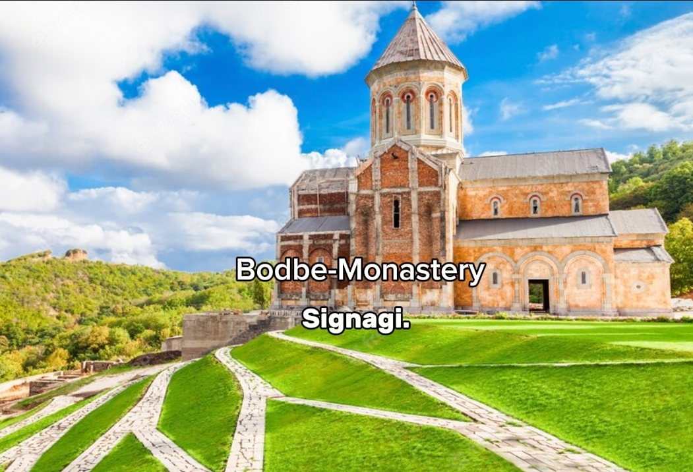
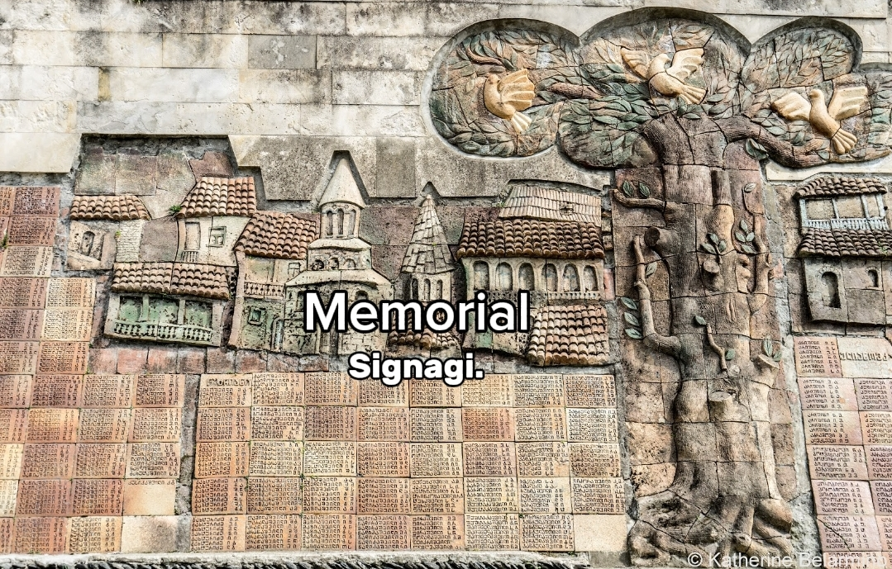

ბოდბის მონასტერი, წმ. ნინოს სახელობის დედათა მონასტერი და საეპისკოპოსო ცენტრი კახეთში, ქ. სიღნაღიდან 2 კმ-ზე. 2006 წლის 7 ნოემბერს, საქართველოს პრეზიდენტის ბრძანებულების თანახმად მიენიჭა ეროვნული მნიშვნელობის კულტურის უძრავი ძეგლის კატეგორია[1]. გადმოცემის თანახმად, აგებულია ქართველთა განმანათლებლის წმ. ნინოს დაკრძალვის ადგილზე სხვა მოსაზრებით (სარგის კაკაბაძე, ბაადურ მჭედლიშვილი, ზურაბ კიკნაძე, თენგიზ მირზაშვილი) (წმინდა ნინო უნდა გარდაცვლილიყო დღევანდელ სოფ. ნინოწმინდაში, საგარეჯოს მუნიციპალიტეტში. იხ. ბოდი). ბოდბის მონასტერს დიდ ყურადღებას აქცევდნენ ქართველი მეფეები. იგი მრავალჯერ იქნა შეკეთებული და რესტავრირებული. XVII-XVIII საუკუნეებში ბოდბის მონასტერში მოღვაწეობდნენ მწიგნობარნი ზაქარია ბოდბელი (XVII ს.), ონოფრე ბოდბელი (XVIII ს.), იოანე ჯორჯაძე (XVIII ს.), დავით ბოდბელი (XVIII ს.), იოანე მაყაშვილი (1743-1837) და სხვები.
სიღნაღის 9 აპრილისა და მეორე მსოფლიო ომის მემორიალები კახეთში, ქალაქ სიღნაღში მდებარეობს. ისინი გვერდიგვერდაა განლაგებული. მეორე მსოფლიო ომის მემორიალი რელიეფურ კედელს წარმოადგენს, რომელზეც ომში დაღუპულთა სახელები წერია. კედელზე ასევე გამოსახულია მებრძოლთა და ქალაქის არქიტექტურის რელიეფები. სიღნაღის რაიონიდან მეორე მსოფლიო ომის დროს ძალიან ბევრი ადამიანი დაიღუპა. კედლის წინ დაუმუშავებელი ლოდი დევს, იგი 1989 წლის 9 აპრილს ტრაგიკულად დაღუპულთა მემორიალია. 1989 წლის 9 აპრილს საბჭოთა არმიამ ]ნტი-საბჭოთა, საქართველოს დამოუკიდებლობის მოთხოვნით მოწყობილი მშვიდობიანი დემონსტრაცია დაარბია, დარბევის შედეგად 21 ადამიანი დაიღუპა და ასობით დაიჭრა.
სოლომონ დოდაშვილი (დ. 17 მაისი, 1805, სოფ. მაღარო — გ. 20 აგვისტო, 1836, ვიატკა, რუსეთი) — ქართველი მეცნიერი და საზოგადო მოღვაწე, ლოგიკის ქართული მეცნიერული სკოლის დამფუძნებელი. ავტორი მრავალი გავლენიანი სამეცნიერო შრომისა ლოგიკის, ქართული ენისა და ლიტერატურის ისტორიის სფეროებში. დაიბადა სოფ. მაღაროში (ახლანდელი სიღნაღის მუნიციპალიტეტი). 1827 წელს, სანქტ-პეტერბურგის უნივერსიტეტის ფილოსოფიის ფაკულტეტი დაამთავრა. 1828 წელს, ამავე უნივერსიტეტში ფილოსოფიის მაგისტრის ხარისხი აიღო. 1828–1832 წლებში იყო პირველი ქართული გაზეთის „ტფილისის უწყებანის“ ყოველკვირეული დამატების მთავარი რედაქტორი. აქტიური წევრი იყო ეროვნულ-განმათავისუფლებელი მოძრაობის, რის გამოც 1832 წელს დაპატიმრებულ იქნა (იხ. 1832 წლის შეთქმულება). 1836 წელს გარდაიცვალა ვიატკის საპყრობილეში (რუსეთი). 1994 წელს ვიატკიდან გადმოსვენებულ იქნა საქართველოში, თბილისის მთაწმინდის პანთეონში.

დღეს 9 აპრილის ტრაგედიიდან 32 წელი გავიდა. ამ დღესთან დაკავშირებით, ადგილობრივი ხელისუფლების წარმომადგენლებმა 1989 წლის 9 აპრილს დაღუპულთა ხსოვნას პატივი მიაგეს და მემორიალი გვირგვინით შეამკეს. მათ 9 აპრილის მოვლენები გაიხსენეს, ისაუბრეს ამ დღის მნიშვნელობაზე. 1989 წლის 9 აპრილს, საბჭოთა კავშირის სადამსჯელო სამხედრო ნაწილებმა მშვიდობიანი საპროტესტო აქცია დაარბიეს, რის შედეგადაც 21 ადამიანი დაიღუპა. 1989 წლის 9 აპრილიდან ზუსტად ორი წლისთავზე, საქართველოს რესპუბლიკის უზენაესმა საბჭომ ზვიად გამსახურდიას მეთაურობით საქართველოს დამოუკიდებლობის აღდგენის აქტი მიიღო. მსვლელობა კორონავირუსის გავრცელების პრევენციის მიზნით, ჯანდაცვის მსოფლიო ორგანიზაციისა და მთავრობის რეკომენდაციის შესაბამისად ჩატარდა.